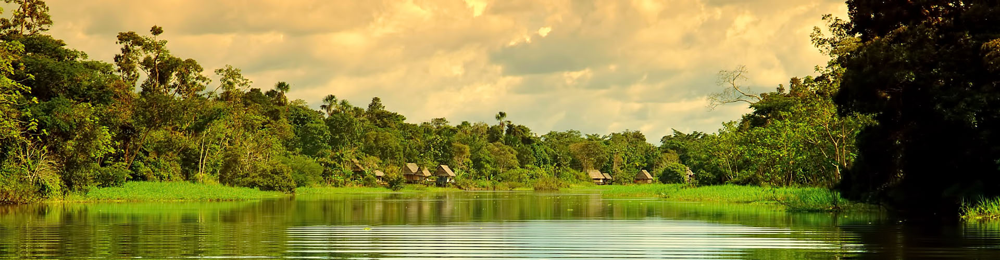

Comidas de la Selva
| Tacacho con Cecina | Timbuche |
Descripción
 La zona de la selva del Perú tiene una gran biodiversidad en fauna, por lo cual
es tradicional el consumo de variados tipo de carne como la huangana; especie
de chancho silvestre, el suri, roedores como el majaz, añuje y sachacuy, armadillo,
tortuga terrestre, monos, entre otros.
Entre la diversa variedad de animales destaca el paiche, que es el segundo pez
más grande de agua dulce, llegando a pesar hasta 3000 kilos y puede llegar a
medir 2.5 metros de largo. Los platos más conocidos de la selva peruana son el
juane y el tacaco con cecina; también existen otros platos de bastante consumo
como el inchicapi, la patarashca y la ensalada de chonta.
El juane es un plato muy consumido durante la fiesta de San Juan que se celebra
el 24 de junio de cada año, se prepara a base de arroz, carne de gallina, aceituna,
huevo cocido, entre otras especies; la cual es envuelta en una hoja de bijao que
posteriormente se pone a hervir durante aproximadamente una hora y media. El tacacho
con cecina es un plato que consiste en tener dos bolas de tacacho, una pieza de
cecina y una de chorizo. Se elabora a base de un plátano verde asado,
cecina de cerdo o chorizo, aceite, manteca de cerdo, sal y pimienta al gusto.
La zona de la selva del Perú tiene una gran biodiversidad en fauna, por lo cual
es tradicional el consumo de variados tipo de carne como la huangana; especie
de chancho silvestre, el suri, roedores como el majaz, añuje y sachacuy, armadillo,
tortuga terrestre, monos, entre otros.
Entre la diversa variedad de animales destaca el paiche, que es el segundo pez
más grande de agua dulce, llegando a pesar hasta 3000 kilos y puede llegar a
medir 2.5 metros de largo. Los platos más conocidos de la selva peruana son el
juane y el tacaco con cecina; también existen otros platos de bastante consumo
como el inchicapi, la patarashca y la ensalada de chonta.
El juane es un plato muy consumido durante la fiesta de San Juan que se celebra
el 24 de junio de cada año, se prepara a base de arroz, carne de gallina, aceituna,
huevo cocido, entre otras especies; la cual es envuelta en una hoja de bijao que
posteriormente se pone a hervir durante aproximadamente una hora y media. El tacacho
con cecina es un plato que consiste en tener dos bolas de tacacho, una pieza de
cecina y una de chorizo. Se elabora a base de un plátano verde asado,
cecina de cerdo o chorizo, aceite, manteca de cerdo, sal y pimienta al gusto.
La comida de la selva peruana tiene como elementos populares, entre otros, un aderezo básico que es conocido como misto o mishkina, el ingiri; especie de plátano verde sancochado, el consumo de frutas y la cocción de las carnes, especialmente peces y también juane; el cual se envuelve en hojas de Bilbao que es una palmera que cuenta con un aroma particular. Las carnes son usualmente aportadas por la cacería, la pesca y la ganadería. Entre las especies de frutas que brinda la selva del Perú destaca el camu camu; fruta que contiene cuarenta veces más vitamina C que el kiwi, destaca tambien el aguaje; del cual se prepara un refresco llamado aguajina, con alto contenido de vitamina A. Los frutos exóticos como el mango, la piña entre otras también abundan en la Selva y son de alto consumo; del plátano verde se preparan un refresco conocido como chapo. Un elemento importante que destaca en la comida de la selva del Perú son los licores, mayormente producto de la fermentación del licor de caña combinado con otras especies. El uvachado, el siete raíces y el rompe calzón son los más conocidos, no dejando de lado al popular masato, que es una bebida de orígenes prehispánicos elaborada a base de yuca masticada y fermentada durante días en un recipiente de barro.